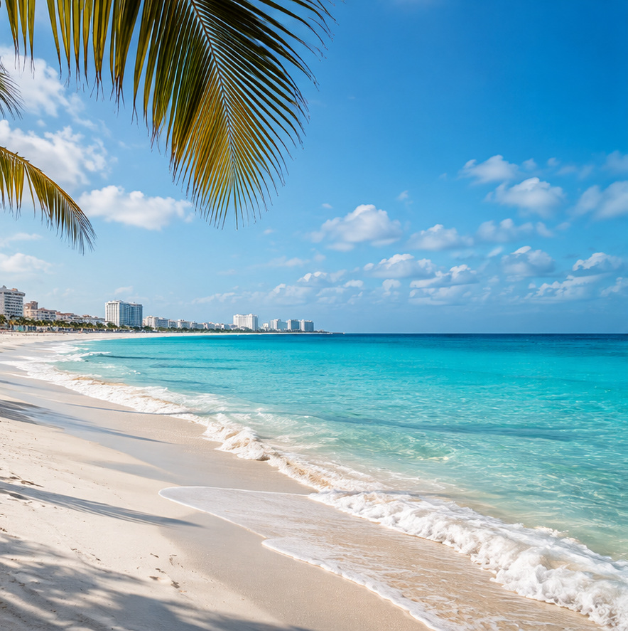
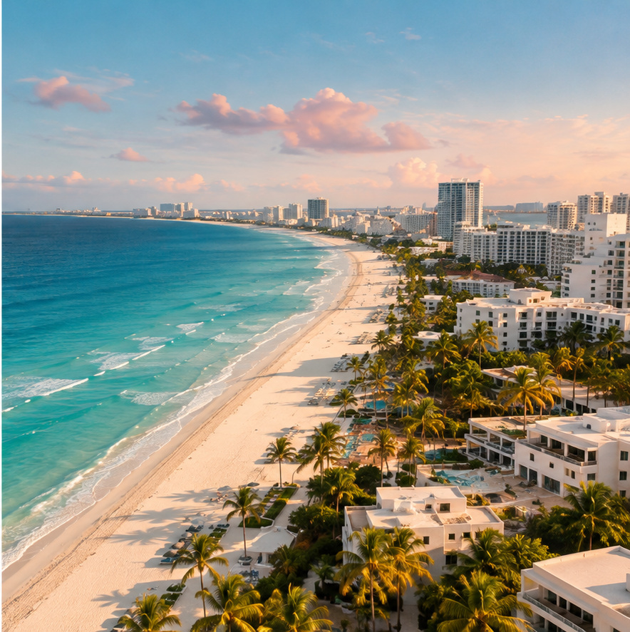

Cancún
Donde el azul infinito del Caribe se encuentra con una energía que invita a vivir cada instante. Cancún combina playas de arena blanca, experiencias extraordinarias y una vibrante escena gastronómica en un entorno de belleza natural. Un destino donde el descanso y la aventura conviven, creando el escenario perfecto para compartir momentos que se convierten en recuerdos inolvidables.
Lo más destacado
- Playas de arena blanca y mar turquesa
- Vida nocturna y entretenimiento
- Gastronomía internacional y local
- Actividades acuáticas y deportes extremos
- Excursiones a sitios arqueológicos cercanos
Datos rápidos: Aeropuerto Internacional de Cancún · Ideal para familias, parejas y grupos

